This project was a challenging one I admit. There were various obstacles we had to overcome. The development was relatively easy however. All we had to do was generate the concept of the game. PacMan came to mind as easy to develop, so the old Coleco game Mousetrap came to mind. We each added our own signatures to the game. I searched for sound files, and some artwork like the dog that was cut from the game due to time constraints. When problems arose, we attempted to work together to resolve the problem. One of the aforementioned problems were the drifting of the mouse. Millie the Mouse would jump the walls on the map. She would come to the wall and, essentially phase through the wall. She was programmed to keep moving until she hit the color green. As long as she was on top of the color black she would keep moving. Since the inside of the wall contained a cavity that was black, she would hit the black with the edge of her body. This would register as the color black, and she would keep moving. To fix this, the cavities on those walls had to be colored in green. Another major hiccup happened because of time constraints. Five cats were to be incorporated into the game. These cats would have to be coded one by one, so naturally, time was a major factor in deciding to neglect those assets. So, a new objective of the game had to be introduced and the only logical objective that we could deduce, was to turn the game into a time based strategy. This required a timer, so one was coded. A problem arose, however, and the timer would count down at an incredible rate. To fix this, we had to replace the custom coded timer with the base one from scratch which we had neglected before.
https://github.com/MaddieCW3/thunkable
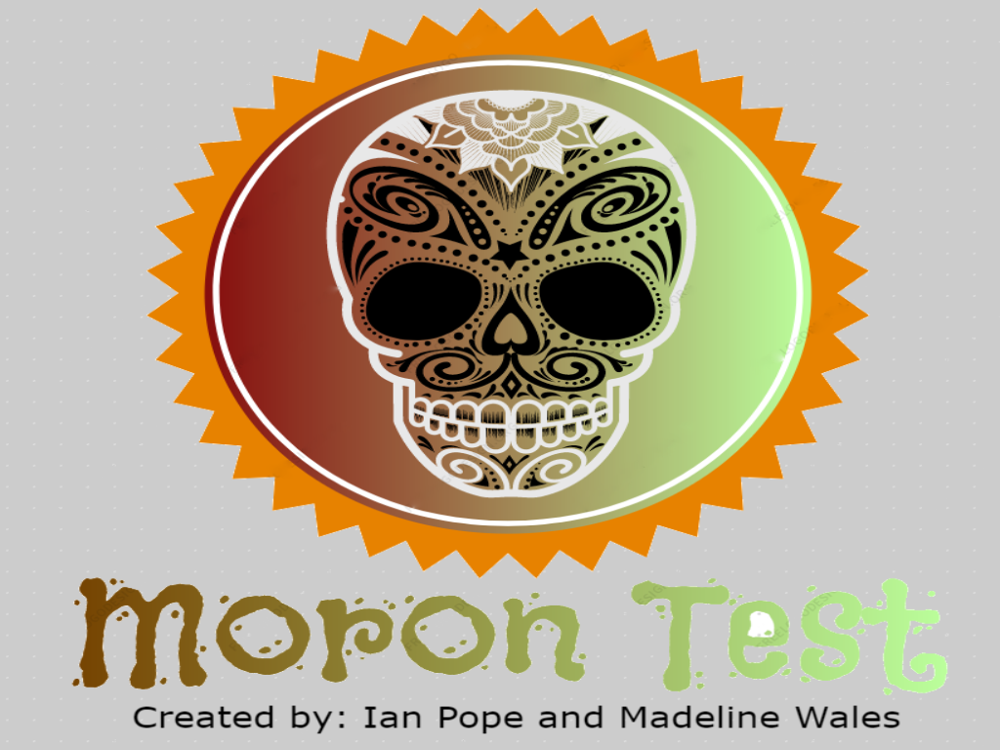
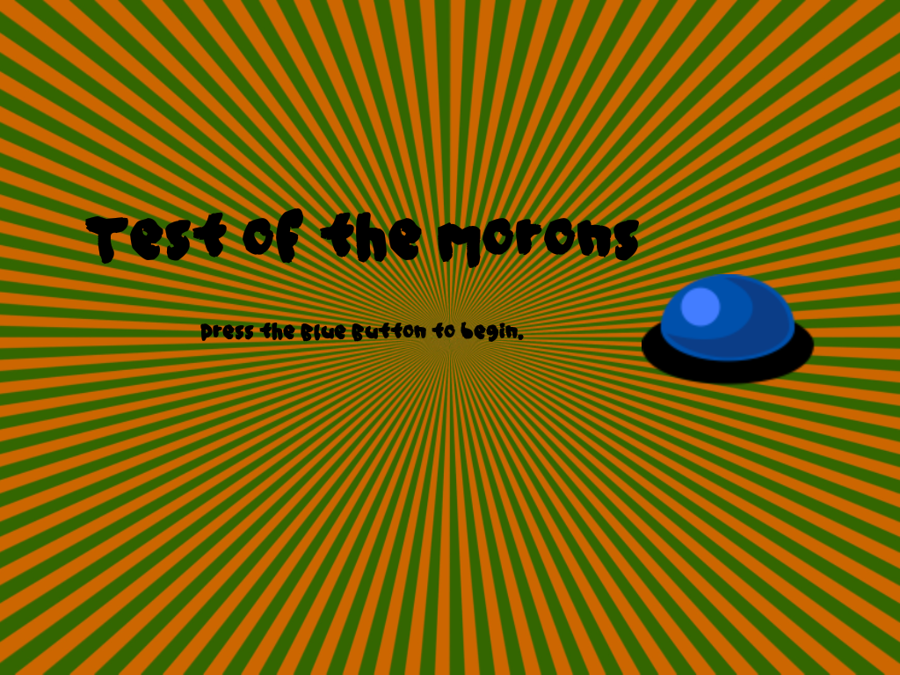
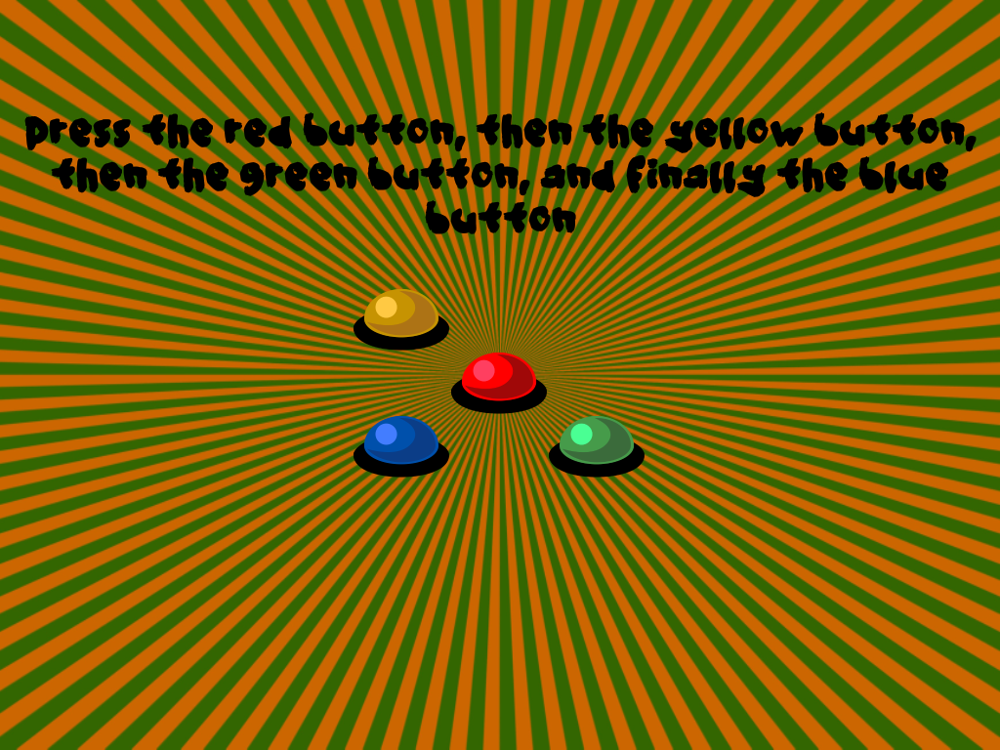
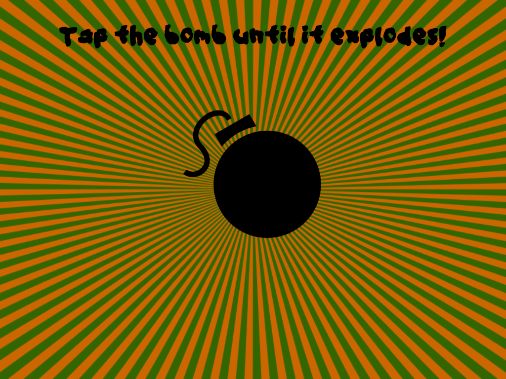
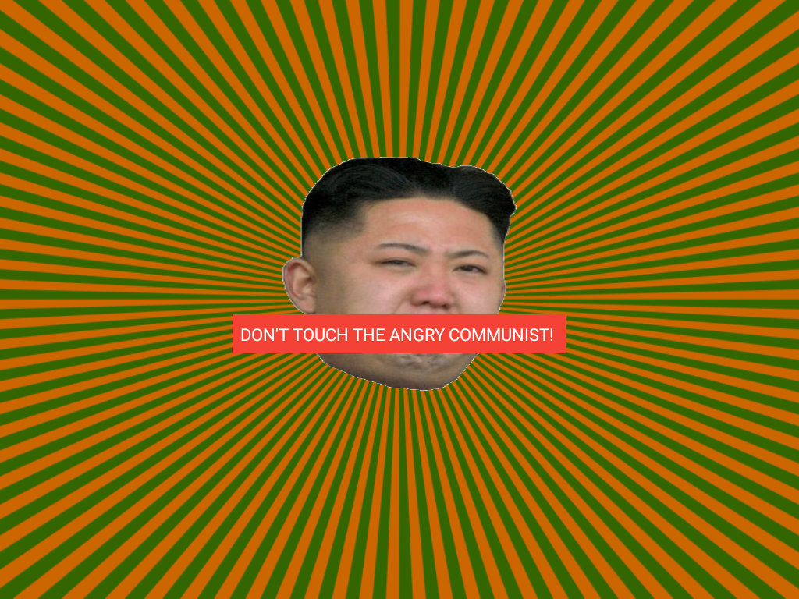
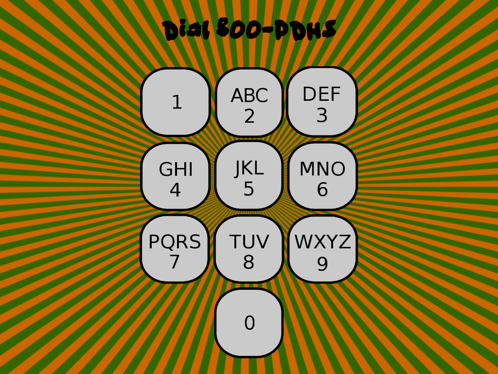
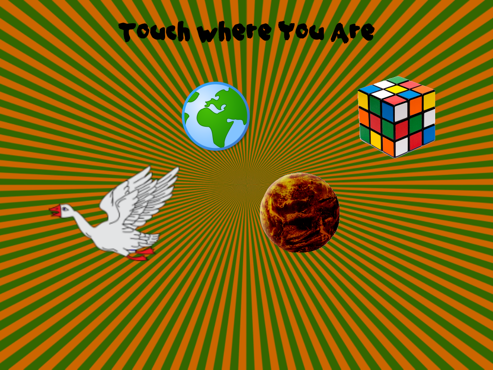
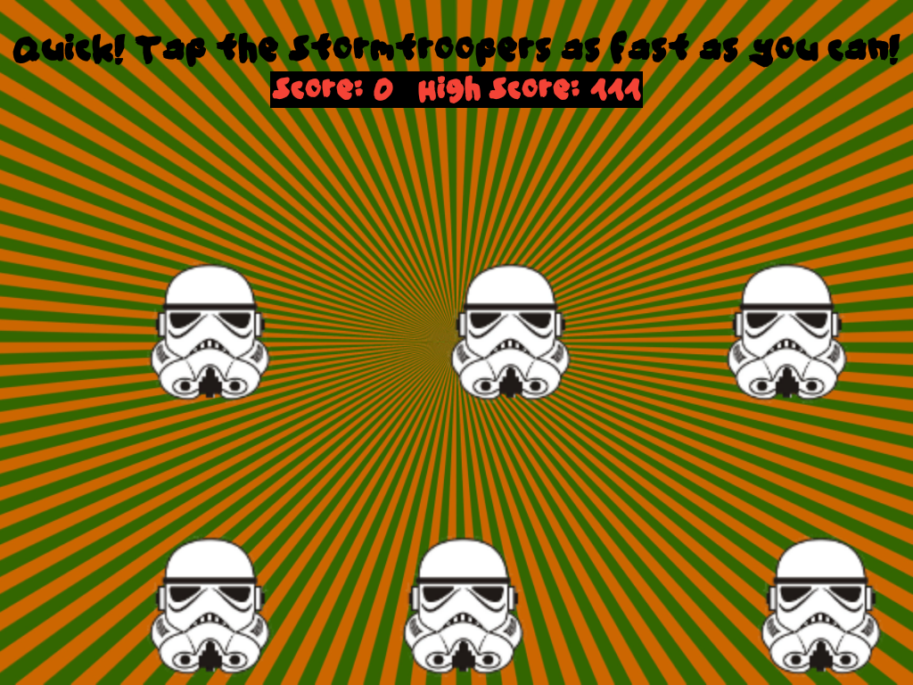
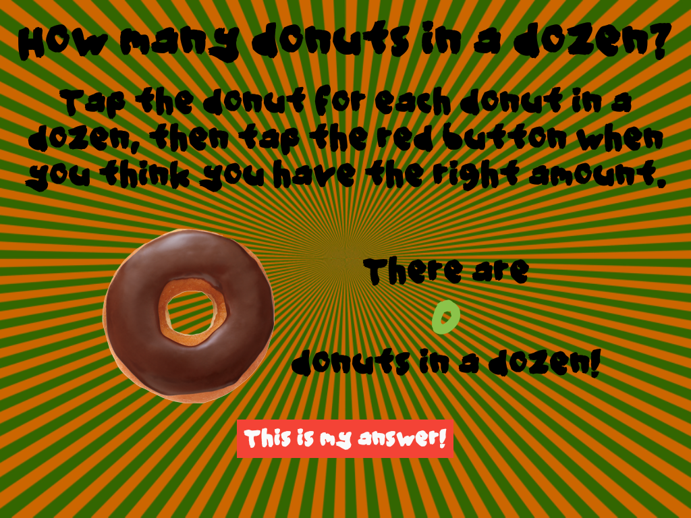
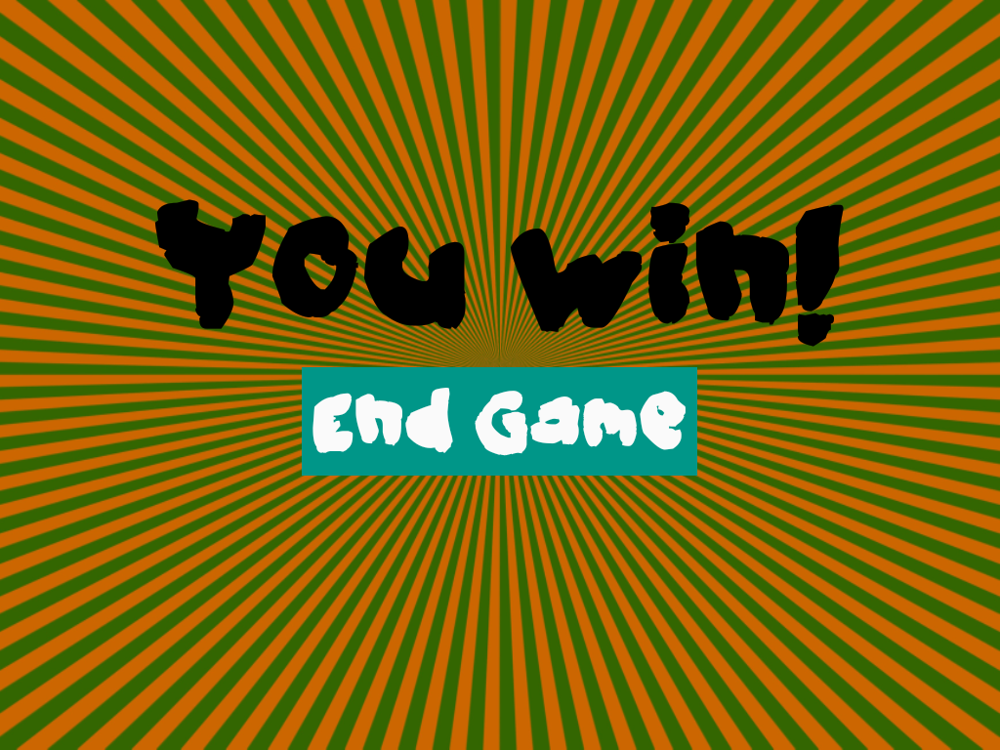
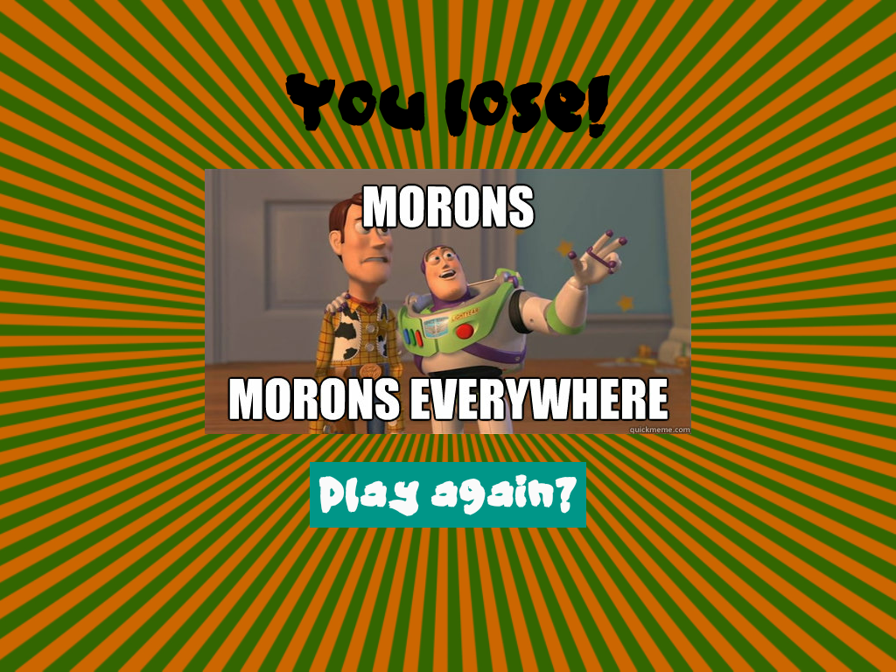This program was created using the App Inventor language. The purpose of the program is to provide entertainment to a user, or users, by having said users complete a variety of tasks found throughout the game.
The game contains nine levels, that the player must complete. The first level would be to touch a blue button. This was an easy process to code. The pictures above show the various levels of the game, including the title screen, and the branding screen.
RSA
RSA.html
>For this project we used the Canopy code editor. The purpose of the program, is to allow a user to decrypt a message, using their public key, which will then allow another individual to decrypt the message using a personal key.
The video shows the program performing the tasks mentioned previously. Link to CODE==https://github.com/IanPope/RSA-Code
Arduino
Arduino.html
This project was a relatively easy. The project includes a workable LED that alerts the user to the events according to the colors of the LED. A LCD was also used to display text during the run of the program. A buzzer was used to
add sound effects to the program.